Conventional Construction and 3D Printing: A Comparison Study on Material-Cost in Jordan (2020-05)
Rawan Allouzi,
Wael Al Azhari,
Rabab Allouzi Journal Article – Journal of Engineering, Vol. 2020, No. None, pp. 1-14
AbstractThree-dimensional (3D) printing is a procedure used to create 3D objects in which consecutive layers ofa material are computercontrolled produced. Such objects can be constructed in any shape using digital model data. First, this paper presents a state-ofthe-art review of the advances in 3D printing processes of construction. Then, the architectural, economical, environmental, and structural features of 3D printing are introduced. Examples of 3D printed structures are presented, and the construction challenges facing Jordan, that encouraged this study, are stated. Finally, a precise description regarding the impact of3D printing is provided by comparing conventional construction data of Ras Alain Multipurpose Hall in Jordan and the expected data if the same building has been built using 3D printing. The suggested model is generated using Revit software. As a result ofthis study, an understanding of 3D printing procedure, mechanism of action, and its impact on the future of construction and architecture through economical, structural, and environmental parameters is achieved. This leads to encourage engineers and contractors to take this subject into account for construction in Jordan.Metrics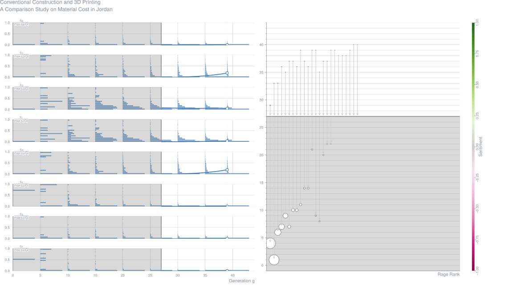
Qualitative Assessment of Interfacial Bonding in 3D Printing Concrete Exposed to Frost-Attack (2020-05)
Joseph Assaad,
Farook Hamzeh,
Bilal Hamad Journal Article – Case Studies in Construction Materials, Vol. 13, pp. None
AbstractThe 3D printing technology is a novel construction process to build concrete structures layer-by-layer based on computer digital programs. The main objective of this research program is to develop a testing protocol that replicates the successive placement ofmortar layers and satisfactorily measures the effect of repeated freeze/thaw (F/T) cycles on durability and interfacial bond strengths. Three mortar series made with different binder and mixing water contents are tested; the consistency of mixtures was adjusted to allow proper extrusion using a laboratory 3D printer. Particular emphasis was placed to compare the efficiency of air-entraining agent (AEA) and styrene-butadiene rubber (SBR) latexes to protect mortars against deterioration due to frost attack. The incorporation of SBR was found more efficient than AEA to mitigate the drop in bond strength due to F/Tcycles, given the enhanced flexibility of the polymer-modified mortars that accommodate the deformations and stresses created along the interfaces. The pull-off test results obtained were successfully validated using specimens generated from the laboratory 3D printer.Metrics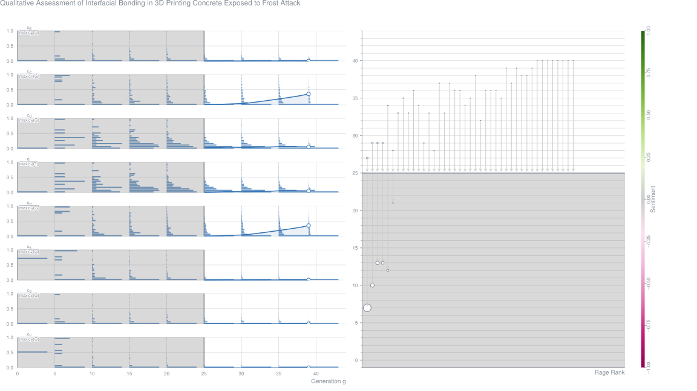
A Modular Approach for Steel Reinforcing of 3D Printed Concrete: Preliminary Study (2020-05)
Joseph Assaad,
Abdallah Abou Yassin,
Fatima El Sakka,
Farook Hamzeh Journal Article – Sustainability, Vol. 12, No. 10
Abstract3D concrete printing technology has considerably progressed in terms of material proportioning and properties; however, it still suffers from the difficulty of incorporating steel reinforcement for structural applications. This paper aims at developing a modular approach capable of manufacturing 3D printed beam and column members reinforced with conventional steel bars. The cubic-shaped printed modules had 240 mm sides, possessing four holes on the corners for subsequent insertion of flexural steel and grouting operations. The transverse steel (i.e., stirrups) was manually incorporated during the printing process. The reinforced 3D printed beams were built by joining the various modules using high-strength epoxy resins. Test results showed that the compressive and flexural strengths of plain (i.e., unreinforced) 3D printed specimens are higher than traditionally cast-in-place (CIP) ones, which was mostly attributed to the injected high-strength grout that densifies the matrix and hinders the ease of crack propagation during loading. The flexural moment capacity of 3D reinforced printed beams were fairly close to the ACI 318-19 code provisions; however, about 22% lower than companion CIP members. The reduction in peak loads was attributed to the modular approach used to construct the 3D members, which might alter the fundamentals and concepts of reinforced concrete design, including the transfer and redistribution of stresses at ultimate loading conditions.Metrics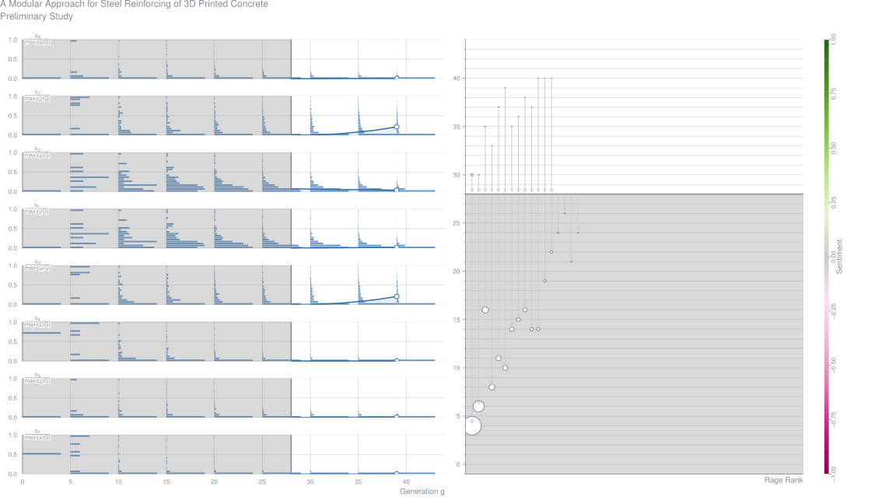
Mechanical Assessment of Concrete: Steel Bonding in 3D Printed Elements (2020-05)
AbstractDigital construction of concrete elements using 3D printing technology has been undergoing an exponential growth in terms of research activities and demonstration projects. Though, most researches focused on the behavior of the cementitious materials used in 3D printing, without deeply immersing in the reinforcement of printed elements. In this paper, a detailed experimental program is presented to characterize the quality of the bond developed between concrete and steel bars through a series of pull-out tests. These tests are performed over printed and non-printed samples as well. When printed, the layers orientation, whether parallel or perpendicular to the steel bar is taken into consideration. Hence, it was found that a highly thixotropic material did not undermine the developed bond between printed concrete and rebar. In addition, vibrated concrete (non-printed) gave better resistance to pull-out stresses succeeded by the parallel then the perpendicular samples. Yet, the overall performance of 3D printed concrete in terms of the bond generated with steel could be rated as satisfactory.Metrics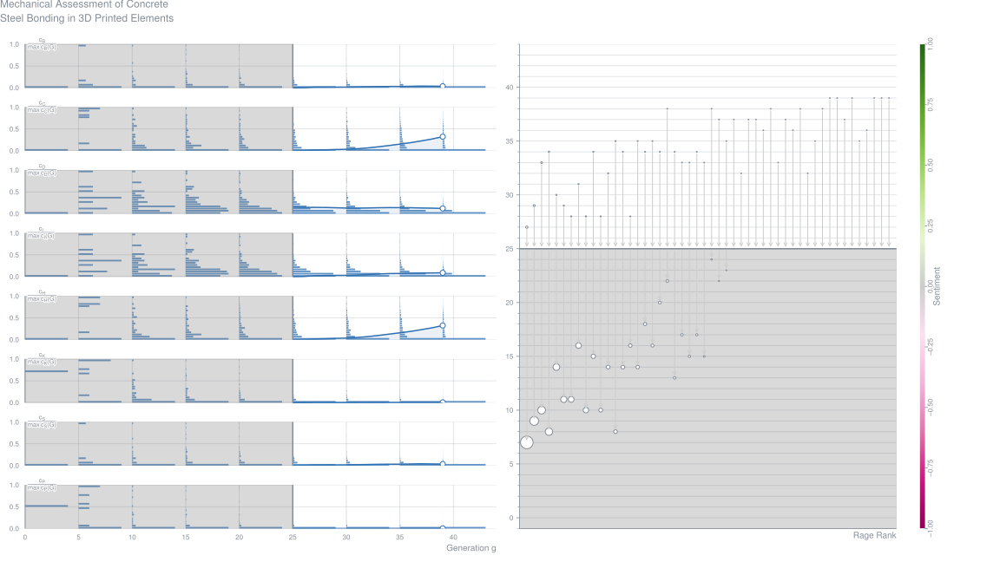
A Process Classification Framework for Defining and Describing Digital Fabrication with Concrete (2020-05)
AbstractDigital Fabrication with Concrete (DFC) encompasses 3D Concrete Printing (3DCP) and many other methods of production. DFC is emerging from an era of invention and demonstration to one where the merits of one principle over another needs to be quantified systematically. DFC technologies vary in characteristics, complexity and maturity which hampers the synthesis of research and comparisons of performance. The interdependence of design geometry, material properties and process characteristics is well recognised. Materials research has made significant progress in recent years and there have been many applications with varying design geometries demonstrated. Far less has been done to guide the definition and description of the processes used. This work takes a step forward by presenting classification and process description guidance for DFC. The approach was developed by engaging a broad cross-section of the international community through the activities of the RILEM Technical Committee 276 between 2016 and 2020.Metrics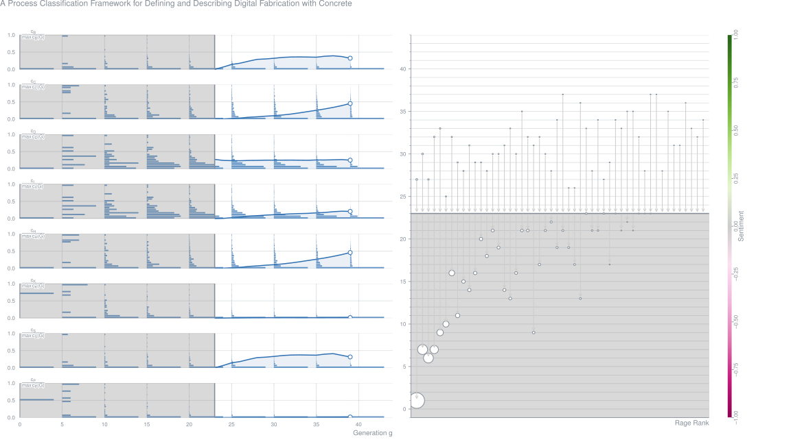
An Experimental Study of the Behavior of 3D Printed Concrete at Elevated Temperatures (2020-05)
Abstract3D printing of concrete (3DPC) is an automated layer-wise construction technique that does not require temporary support, such as formwork, during the construction process. It facilitates the realization of geometrically complex objects at reduced construction time, and potentially cost, compared to conventional construction techniques. However, with technological advancements and new innovative construction methods, such as 3DPC, it is still crucial to understand their performance in fire. Although concrete structures generally have a good reputation for their behavior in fire, there is negligible literature available on the behavior of 3DPC at evaluated temperatures. It is with this backdrop that this paper conducts a preliminary investigation on the behavior of 3DPC at elevated temperatures by conducting an experimental study. Eight concrete samples, consisting of both 3DPC and conventionally casted concrete, were tested by exposing the samples to a high incident heat flux via radiant panels, along with an additional 15 samples to obtain ambient strength properties. It was found that 3DPC is less susceptible to thermo-hygral spalling as a result of higher permeability and porosity in the 3DPC specimens compared to normally casted concrete. However, the 3DPC samples delaminated between layers (thermo-mechanical) as a result of reduced flexural strength.Metrics
Additive Manufacturing of Reinforced Concrete: Development of a 3D Printing Technology for Cementitious Composites with Metallic Reinforcement (2020-05)
AbstractReinforced concrete (RC) is by far the most widely used composite material in the world. Despite the enormous economic importance of RC construction, there is a lack of viable concepts for its digital fabrication. While 3D printing of plain concrete has been pushed forward by a growing research community in recent years, methods for integration of steel reinforcement have only scarcely been researched and little attention has been payed to meet the practical requirements of construction sites and prefabrication plants. Therefore, full-scale implementations of current approaches are hardly available. Based on both, a sound review of R&D for digital fabrication of RC structures and an analysis of practical requirements, the present paper proposes a novel 3D printing process for RC structures, called Additive Manufacturing of Reinforced Concrete (AMoRC), viable for real-world application. In this hybrid process, consisting of an intermittent stud welding process and a continuous concrete extrusion process, segmented steel reinforcing bars are joined to form a three-dimensional reinforcement mesh and simultaneously encased with extruded concrete. The paper describes the conceptual design and development of the process and demonstrates the results of preliminary investigations on its feasibility. As AMoRC enables the operation of rebar welding and concrete extrusion process with synchronized feed rates, combination of both processes in one hybrid print head for digital fabrication of RC is a key-advantage of the proposed method.Metrics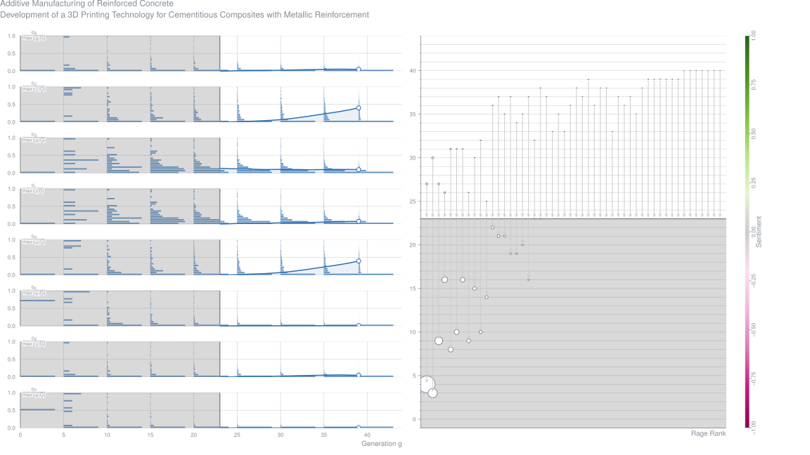
Piling and Pressing: Towards a Method of 3D Printing Reinforced Concrete Columns (2020-05)
Zach Cohen,
Nicholas Carlson Journal Article – Construction Robotics, Vol. 4, No. 1-2, pp. 61-73
AbstractThis paper introduces a speculative method of 3D printing reinforced concrete columns called “piling and pressing.” Innovations in concrete 3D printing research are discussed, specifically those that pertain to the integration of reinforcement, the customization of printing extruders, and the development of 3D printed concrete structures as architectural components. Previous research into an experimental technique of 3D printing concrete called “pointillistic, time-based deposition” (PTBD) is introduced. Findings from research into PTBD that led to the development of the piling and pressing method are presented. The custom concrete 3D printing system that was innovated in order to develop the piling and pressing method is outlined in detail, including its material systems, mechatronic configurations, and temporal parameters. Challenges in both the prototyping of this system and the piling and pressing method are discussed. Finally, future investigations into the piling and pressing method are outlined with a particular emphasis on those that will advance this method towards full-scale architectural construction.Metrics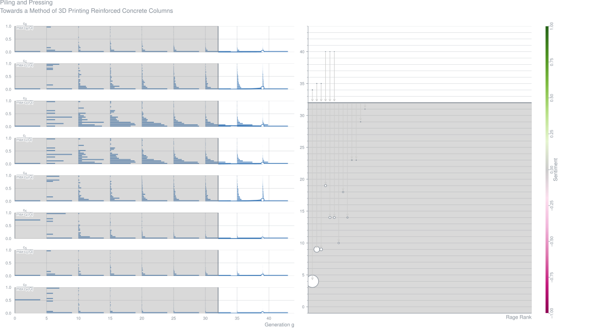
Mechanical Behavior of Printed Strain-Hardening Cementitious Composites (2020-05)
AbstractExtrusion based additive manufacturing of cementitious materials has demonstrated strong potential to become widely used in the construction industry. However, the use of this technique in practice is conditioned by a feasible solution to implement reinforcement in such automated process. One of the most successful ductile materials in civil engineering, strain hardening cementitious composites (SHCC) have a high potential to be employed for three-dimensional printing. The match between the tailored brittle matrix and ductility of the fibres enables these composites to develop multiple cracks when loaded under tension. Using previously developed mixtures, this study investigates the physical and mechanical performance of printed SHCC. The anisotropic behavior of the materials is explored by means of mechanical tests in several directions and micro computed tomography tests. The results demonstrated a composite showing strain hardening behavior in two directions explained by the fibre orientation found in the printed elements. Moreover, the printing technique used also has guaranteed an enhanced bond in between the printed layers.Metrics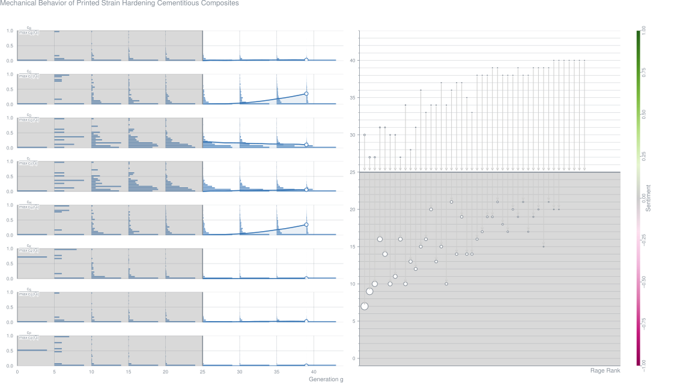
Innovating Materials for Large-Scale Additive Manufacturing: Salt, Soil, Cement and Chardonnay (2020-05)
Virginia san Fratello,
Ronald Rael Journal Article – Cement and Concrete Research, Vol. 134
AbstractThis paper documents four case studies: the Saltygloo, MUD Frontiers, Bloom and the Cabin of 3D Printed Curiosities, that use novel 3D printed materials including salt, soil, cement, and chardonnay in the construction of built proto-architectures. Each of these materials starts as powder or ends as dust, is ubiquitous and plentiful, but must be transformed for 3D printing. The case studies also come from a place of design activism and contemporary concerns, they draw from the past to inform the future, and each project is seen as an opportunity to bring about change by making additive manufacturing more accessible, less expensive, more ecological and sustainable.Metrics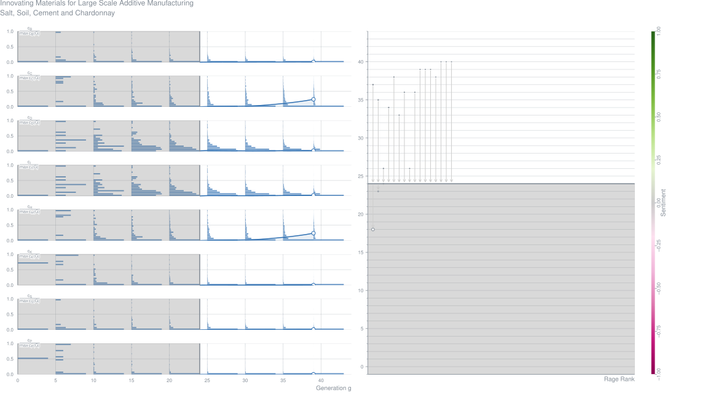
A Comprehensive Performance Evaluation of Different Mobile Manipulators Used as Displaceable 3D Printers of Building Elements for the Construction Industry (2020-05)
AbstractThe construction industry is currently technologically challenged to incorporate new developments for enhancing the process, such as the use of 3D printing for complex building structures, which is the aim of this brief. To do so, we show a systematic study regarding the usability and performance of mobile manipulators as displaceable 3D printing machinery in construction sites, with emphasis on the three main different existing mobile platforms: the car-like, the unicycle and the omnidirectional (mecanum wheeled), with an UR5 manipulator on them. To evaluate its performance, we propose the printing of the following building elements: helical, square, circular and mesh, with different sizes. As metrics, we consider the total control effort observed in the robots and the total tracking error associated with the energy consumed in the activity to get a more sustainable process. In addition, to further test our work, we constrained the robot workspace thus resembling real life construction sites. In general, the statistical results show that the omnidirectional platform presents the best results –lowest tracking error and lowest control effort– for circular, helicoidal and mesh building elements; and car-like platform shows the best results for square-like building element. Then, an innovative performance analysis is achieved for the printing of building elements, with a contribution to the reduction of energy consumption.Metrics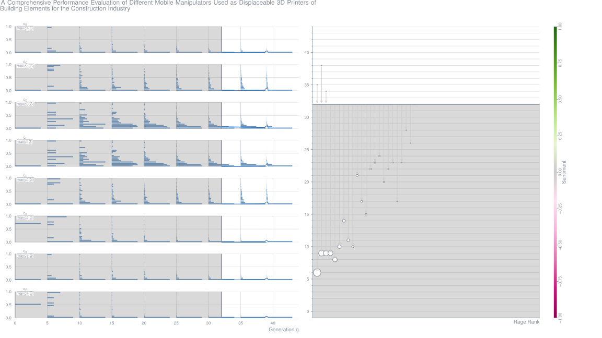
Energy-Saving-Potential of 3D Printed Concrete Building with Integrated Living Wall (2020-05)
AbstractLarge-scale concrete 3D printing and digital construction has brought enormous potential to expand the design space of building components (e.g., building envelope) for the integration of multiple architectural functionalities including energy saving. In this research, a modular 3D printed vertical concrete green wall system – namely the 3D-VtGW, was developed. The 3D-VtGW envelope was assembled with prefabricated (3D printed) multifunctional wall modular elements, which serves as the enclosure of the building as well as the backbone for a green wall system to improve building’s energy efficiency. Using this design concept and large-scale concrete 3D printing, a prototype commercial building was built in Nanjing, China. To quantify the energy-saving potential of the 3D-VtGW system, a thermal network model was developed to simulate the thermal behavior of buildings with 3D-VtGW system and for thermal comfort analysis. Whole-building energy simulation was carried out using Chinese Standard Weather Data (CSWD) of Nanjing, China. The simulation results indicate that the building with 3D-VtGW exhibited prominent potential for energy saving and improved thermal comfort. The integrated greenery system in 3D-VtGW largely reduces wall exterior surface temperature and through-wall heat flux via the combined effects of plant shading, evapotranspiration, and heat storage from soil. This study presents the immense opportunities brought by digital fabrication and construction to extend the design space and function integration in buildings.Metrics
Influence of Process Parameters on the Inter-Layer Bond Strength of Concrete Elements Additive Manufactured by Shotcrete 3D Printing (2020-05)
Harald Kloft,
Hans-Werner Krauss,
Norman Hack,
Eric Herrmann,
Stefan Neudecker,
Patrick Varady,
Dirk Lowke Journal Article – Cement and Concrete Research, Vol. 134
AbstractShotcrete 3D Printing (SC3DP) is a novel robot-guided AM technology developed at Technische Universität Braunschweig in the environment of the Digital Building Fabrication Laboratory (DBFL). For successful automation, it is crucial to understand and redefine the entire concrete spraying process with all its interdependent parameters. This paper presents the basic principles of the SC3DP technology together with the results of a comparative study on the influence of the two concrete printing techniques extrusion and SC3DP on the interlayer bond strength. In particular, the effect of different time intervals between the deposition of two adjacent layers regarding mechanical properties (bond strength) is investigated. As will be shown, the SC3DP method allows convenient mechanical properties although the printed samples exhibit distinct anisotropies. The reasons are discussed based on investigations of the air void distribution by micro CT and mechanical test results.
Multi-Axis 3D Printing of Material-Reduced Shell-Structures on a Reconfigurable Supporting-System Using Topology-Optimization Principles (2020-05)
AbstractThe last few decades, the application of 3D Printing (3DP) techniques in construction scale has shown an increased trend, with advantages as well as limitations, mainly related to overhanging angle restrictions during printing of complex geometries including free-form shell structures. This work suggests a five steps methodology as an alternative approach for their design and then their 3DP. In particular, in the first stage, parametric design based on the catenary concept is used for the overall geometrical configuration of free-form shells, aiming at minimization of exercised tension and compression forces. Then, Topology Optimization (TO) principles are applied, in order to reduce total material volume and at the same time to achieve structural stability of the selected shell system. This is followed by an approach for alternating individual unit members based on the functionally graded cellular structures concept, which aims at material distribution and customization in different areas. In the fourth stage, a reconfigurable formwork system is developed and used as a supporting structure for on-site 3DP in different angles and for different design configurations. Finally, the 3DP process of toolpath development and simulation are demonstrated, accompanied by real scale physical experimentation. The work is assessed in providing initial information regarding the effectiveness of the process to be used in the construction of shell structures through multi-axis 3DP assisted by reconfigurable supporting systems.Metrics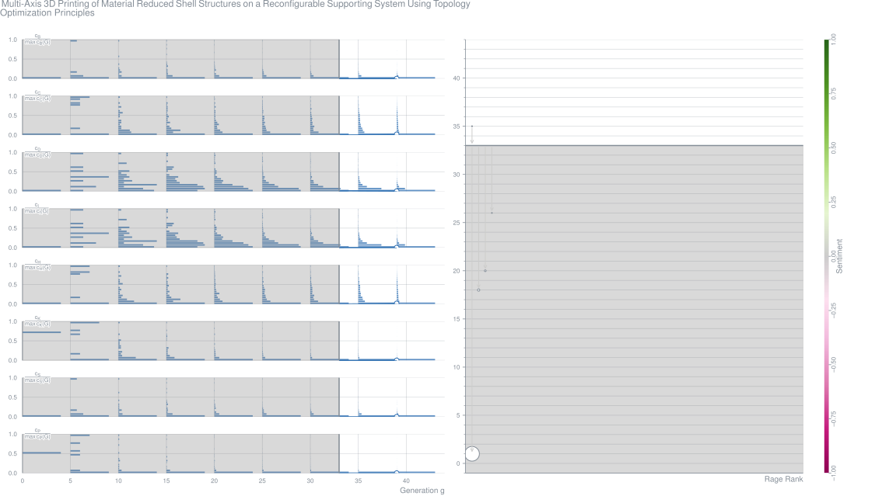
From Smart Dynamic Casting to a Growing Family of Digital Casting Systems (2020-05)
AbstractOver the past decade innovative techniques for shaping concrete have emerged, all aiming to use less material and reduce the need for traditional formwork. One very promising method is to shape concrete dynamically: referred to as Smart Dynamic Casting (SDC), this process was pioneered in 2012 as the first robotically-driven system for slipforming bespoke concrete structures. The process has successfully been adapted to produce structures using ultra-thin formworks that are cast using our digital set-on-demand procedure. More generally we frame this approach as Digital Casting Systems (DCS), which allows the user precisely to determine the hydration rate of the material, thus eliminating formwork pressure. This paper highlights the major findings from SDC that led us to continue developing DCS. It lays out the material concepts fundamental the family of DCS, which, by eliminating the need for bulky formworks, has a large potential impact on future construction methods.Metrics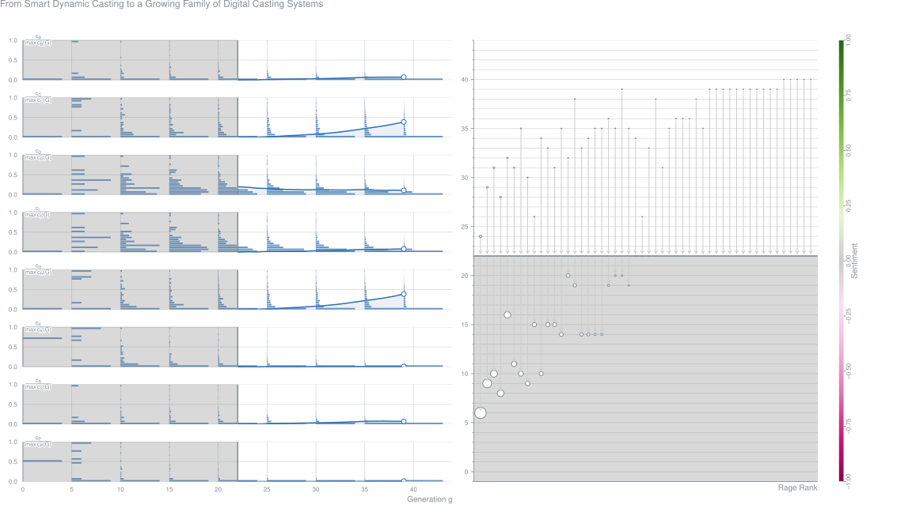
Particle-Bed 3D Printing by Selective Cement-Activation: Applications, Material and Process Technology (2020-05)
AbstractThe present work addresses particle bed binding by selective cement activation as an additive manufacturing process for cement-based materials in construction industry. Its focus is the effect of material and process on the microstructure and macroscopic properties of the hardened material. As macroscopic properties, strength and dimensional accuracy are characterized. The structure of the printed material is investigated on the micro scale by quantifying porosity and homogeneity of the layers. It is shown that material and process parameters such as the w/c-ratio, particle size distribution of the aggregates, addition of methylcellulose as well as the method of water application (spraying or jetting) have a significant effect on the properties of the additively manufactured specimens. Furthermore, the results clearly demonstrate the importance of a thorough analysis of the underlying mechanisms at the micro level for a comprehensive understanding of the material and process-related influences.Metrics
Effectiveness of the Rheometric Methods to Evaluate the Build-Up of Cementitious Mortars Used for 3D Printing (2020-05)
Mohammad Moeini,
Masoud Hosseinpoor,
Ammar Yahia Journal Article – Construction and Building Materials, Vol. 257
AbstractIn this study, the effectiveness of different rheometric methods to evaluate the build-up of the cementitious mortars used for 3D printing was investigated. In the first step, 15 paste mixtures proportioned with various dosages of the nanoclay and the high-range water-reducer were made. The optimized paste mixture was then selected to produce 4 mortar mixtures with different quartz sand contents and gradations. The build-up of the mixtures was evaluated using a non-rheometric method, namely mini-slump cone, as well as the rheometric methods, including the static yield stress, and the storage modulus evolutions. Finally, the printing experiments were carried out using a custom-made 3D printer to evaluate the effectiveness of the investigated methods to assess the build-up of the mortars. The results indicated that different testing methods contributed in understanding different aspects of the build-up such as rigidification at rest or under shear. Each of these build-up aspects provided valuable information on the extrudability and the shape stability of the printed layers.Metrics
Fresh Properties of Cementitious Materials Containing Rice-Husk-Ash for Construction 3D Printing (2020-05)
AbstractCombustion of rice husk produces a supplementary cementing material known as rice husk ash (RHA). Current studies on enhancement of physical properties and durability of cementitious composites with RHA are limited to applications in conventional construction. Automation in construction using additive manufacturing technique—commonly known as construction three-dimensional (3D) printing—is an emergent strategy. Because the printing process is formwork-free and requires a continuous deposition of layers with structural stability, mix design of a 3D printable concrete is different from conventional concrete. Portland cement replacement by RHA improves the sustainability of a mixture as a construction material. In this work, 20% by weight of cement is replaced with RHA. Compressive strength and workability loss of designed mixes—with and without RHA—were studied at early age and compared with fresh properties of proven printable mortar available in market. Incorporation of RHA has shown significant improvement in rheology of mortar at the rate required for construction 3D printing at large scaleMetrics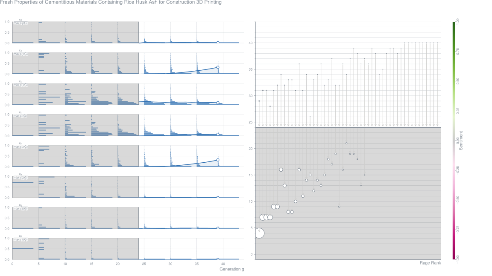
A Critical Examination of the Influence of Material-Characteristics and Extruder-Geometry on 3D Printing of Cementitious Binders (2020-05)
AbstractExtrusion pressure-displacement tests on cementitious pastes with multiple starting materials and differing particle packing, subjected to different extrusion geometries are reported. The steady state extrusion pressure (equivalent to extrusion yield stress) and the deadzone length (static zone of material buildup at die entry) are determined from the pressure-displacement response to characterize the extrudability and/or printability. A unique “geometric ratio” is used to account for the effects of barrel-die geometry on paste extrusion. The ratio of extrusion yield stress (25–75 kPa) to the measured shear yield stress (50–300 Pa), the deadzone length, and the measured-to-designed filament volume at a given flow rate (print speed) are found to remain relatively invariant with geometric ratio for mixtures with high degree of microstructural packing, and thus better extrudability and shape stability. This paper marries materials- and process-related issues and, could pave the way for test methods for 3D printable mixture qualification.Metrics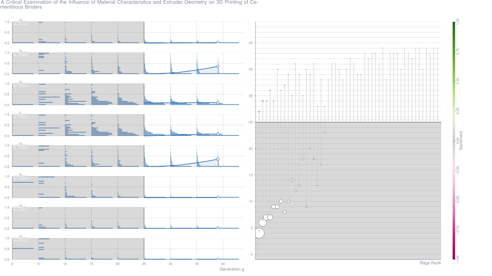
Setting-on-Demand for Digital Concrete: Principles, Measurements, Chemistry, Validation (2020-05)
AbstractDigital fabrication with concrete is a field of rapidly developing building processes – including layered extrusion - where specific yield stress evolution over time is needed, owing to concrete loading during fabrication. By combining physico-chemical principles of concrete yield stress evolution with strength requirements imposed by the building process an avenue is devised for an effective development of these processes. Most notably, strength should grow linearly with time to ensure strength-based self-support, while it should growth with its third power to avoid self-weight induced buckling. It is argued that the needed evolution can be achieved by adequately controlling cement hydration during fabrication. Specifically, we outline the Set on Demand approach, relying on a combination of admixtures adequate for the process under study. This strategy is implemented with newly developed methods capable of measuring concrete yield stress evolution at rest, thus providing the link from chemistry to processing and mechanical stability.Metrics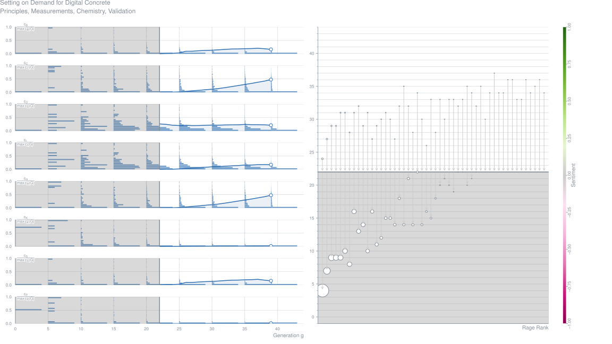
Evaluation of Cementitious Mixes for Printing (2020-05)
M. Vishruthi,
S. Raghavendra,
Y. Ravi Teja,
K. Anand Contribution – Proceedings of the 1st International Conference on Structural Engineering and Construction Management
AbstractTo meet the current expeditious work pace, innovative modus like 3D concrete printing will be useful in bridging sustainability in material usage with cost and time efficiency along with overcoming labor constraints. This preliminary study was aimed at partial replacement of 53 grade Ordinary Portland Cement (OPC) with Flyash (FA), Silica Fume (SF) and Ground Granulated Blast Furnace Slag (GGBS) in the preparation of mixes. The replacement percentages were decided based on literature review and preliminary trials. The fine aggregate of particle size in the range 1.18–2.36 mmwas used as fillers. The required workability for printing (based on trials) was achieved by using minimal dosages of a PCE based superplasticizer. The extrudability of mixes was tested with a simple mortar grouting applicator. The addition of 0.1% percentage of Polyvinyl Alcohol (PVA) fibre resulted in a better finish of the printed layer. The study is focused on the fresh and hardened state properties of printable cementitious mixes. The test results indicate that the mix containing GGBS, FA and fibre had better printability, good interlayer bonding, reduced gap time, and increased flexural and compressive strengths.Metrics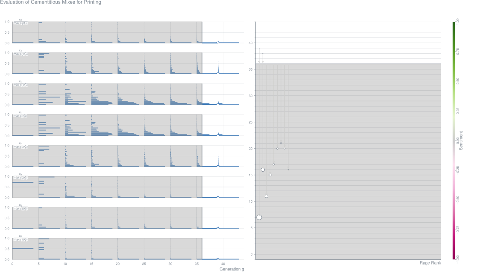